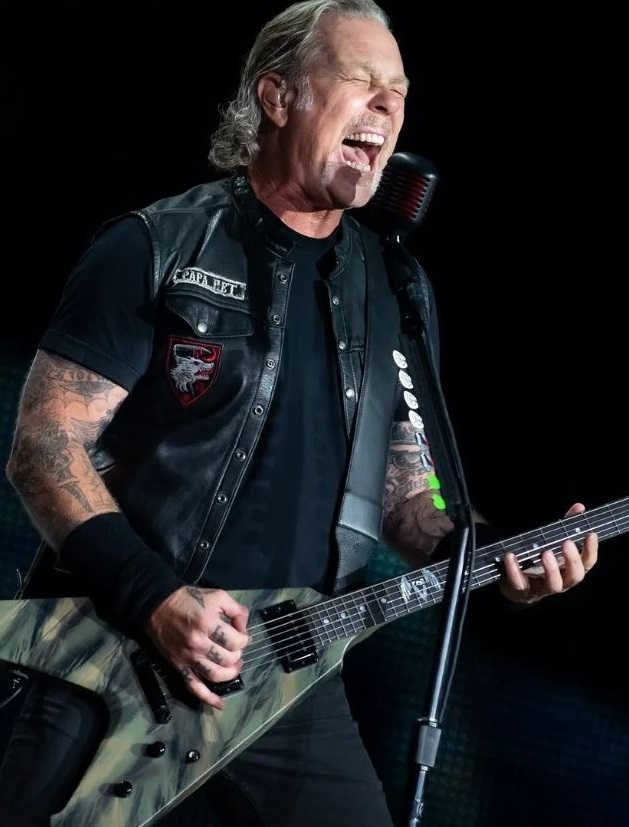

JAMES HETFIELD

VOZ y GUITARRA
Estados Unidos - California
A los nueve años, James comenzó a tomar clases de piano. Más tarde, tocaría la batería de su hermano David, para finalmente dedicarse a la guitarra en su adolescencia, más específicamente con 14 años. En dichos años, James formó su primera banda llamada Obsession, inspirada en grupos como:The Beatles, Black Sabbath, UFO, Kiss, Aerosmith, Motörhead, Queen y Thin Lizzy. Obsession estaba compuesta por los hermanos Veloz, en el bajo y la batería, Jim Arnold en la guitarra principal y Hetfield en la voz. Su amigo Ron McGovney cumplía el rol de roadie, para después ingresar a la banda como miembro integrante al retiro de los hermanos Veloz. Después de trasladarse a Brea, California, James conoció al baterista Jim Mulligan en el Brea Olinda High School. Durante las pausas de almuerzo, ambos ensayaban, asustando a otros guitarristas con sonidos pesados y fuertes, hasta entonces, desconocidos. Un día, un estudiante llamado Hugh Tanner fue visto por James y Jim cargando partes de una Flying V en el colegio. Los tres formaron la banda Phantom Lord, con bajistas intermitentes. El proyecto duró hasta la graduación de James, momento en el que tuvo que volver a Downey. En ese momento, James y su amigo Ron McGovney se trasladaron a una casa programada para demolición, en ese entonces, propiedad de los padres de McGovney. La casa era el lugar ideal para que James y Ron pasaran el tiempo y ensayaran. James convenció a Ron para que tocara el bajo, la banda Phantom Lord se deshizo, dando lugar a la tercera banda de Hetfield que se llamaría Leather Charm. La única diferencia con la banda anterior era que en Leather Charm, James ya no tocaba la guitarra y Ron ahora tocaba el bajo, mientras Tanner y Mulligan mantenían sus instrumentos iniciales. La banda se dedicó a interpretar temas de rock pesado en algunas fiestas y hasta lograron grabar un demo. Después de eso, la banda comenzó a separarse. El primero en retirarse fue Tanner, quien fue reemplazado por Troy James. Posteriormente, el baterista Mulligan decidió integrarse a una banda con estilo más progresivo. A falta de un baterista, James y sus compañeros decidieron disolver Leather Charm definitivamente. Aunque la salida de Mulligan fue lo que determinó a Hetfield para buscar un nuevo baterista, fue también Hugh Tanner quien influyó enormemente en la vida musical de James. Hetfield no consideró al principio tomar el rol de vocalista en sus bandas anteriores. Finalmente, se invitó a John Bush de Armored Saint (luego cantante de Anthrax) para cantar en la banda.
KIRK HAMMET

PRIMER GUITARRA
Estados Unidos - California
Hammett nació en la ciudad de San Francisco y se crio en la comunidad El Sobrante. Hammett es de ascendencia filipina por parte materna e irlandesa-estadounidense por parte paterna. Desde muy joven mostró un gran interés en la música ya que empezó a tocar la guitarra desde que tenía aproximadamente trece o catorce años. Y en la gran colección de discos de hard rock de su hermano Rick, incluyendo material de: Jimi Hendrix3 (Hammett a veces interpreta partes de algunas canciones de Hendrix durante sus solos), entre otros. Comenzó a tocar a los quince años y su primera guitarra fue una Montgomery Ward. Después de tener su primera Stratocaster en 1978, Hammett intentó personalizar su sonido con partes de varios tipos de guitarras. Los intereses musicales de Hammett lo condujeron al género conocido como thrash metal. En 1982 formó el grupo Exodus, con el vocalista Paul Baloff, el guitarrista Gary Holt y el baterista Tom Hunting. Exodus fue crucial en el movimiento del thrash metal en California durante la década de 1980.3 En 1983, cuando Metallica iba a grabar su primer álbum de estudio, Kill 'Em All, invitó a Hammett a formar parte del grupo, ya que el entonces guitarrista líder de la banda, Dave Mustaine, fue expulsado por problemas de alcoholismo. Después de grabar el álbum, Hammett empezó a recibir clases de guitarra del solista Joe Satriani, con el que aprendió nuevas técnicas y sonidos más melódicos para los siguientes álbumes.3Satriani afirma que Kirk fue uno de sus mejores alumnos. En 2002 se le dio un puesto en el "Salón de la Fama" de la revista Guitar World. Ha grabado y ha hecho actuaciones en directo con Metallica desde hace más de treinta años y es un modelo para muchos guitarristas modernos. Como guitarrista solista de Metallica, Hammett ha escrito y contribuido con riffs y solos para el grupo desde 1983. Uno de estos riffs, el de la canción «Enter Sandman», fue escrito en la habitación de un hotel a las 3:00 de la madrugada.[cita requerida] Fue la primera canción del álbum Metallica (The Black Album), publicado en 1991. El 12 de abril de 2015, se unió a Meshuggah en el escenario en RockBar Theather en San José, durante la segunda entrega de su tema anual de miedo Fear FestEvil, un evento de música y recuerdos.
ROBERT TRUJILLO

BAJO
Estados Unidos - California
El bajista Jason Newsted, abandonó la banda en 2001. Tras meses de audiciones en busca de sustituto, como puede verse en el documental Some Kind of Monster 2004, entre las que cabe destacar las de Mike Inez (Alice in Chains, Ozzy Osbourne), el actual bajista de Marilyn Manson Twiggy Ramirez, y el bajista de Kyuss, Scott Reeder, entre otros, llegó el turno de Trujillo. Después de su audición el grupo quedó impresionado por su forma de tocar, por su facilidad para tocar las canciones así como para seguirlos a ellos, en definitiva fue el elegido para formar parte del grupo como nuevo miembro permanente. El grupo le ofreció 1 millón de dólares por unírseles en referencia al porcentaje que él podría ganar siendo de la banda, así como el asegurarse la dedicación absoluta y plena al grupo. Cabe decir que Trujillo no creía que fuera el elegido, y la noticia le sorprendió a la vez que le encantó. Pertenecer a un grupo de la popularidad de Metallica, es una proposición muy atractiva. Se incorporó al grupo después de la edición del St. Anger (donde el productor Bob Rock grabó las pistas de bajo), hasta la actualidad. El grupo realiza el tour Escape from the studio 2006 por todo el mundo. También este mismo año la banda apareció en un episodio de Los Simpsons. En el 2007 graban una versión de "The Ecstasy of Gold" de Ennio Morricone que aparece en el disco tributo We All Love Ennio Morricone. En el 2008 sacaron un nuevo disco con la producción de Rick Rubin en lugar de Bob Rock, de nombre Death Magnetic. El lanzamiento se produjo el día el 12 de septiembre de 2008, y en él es evidente la gran relevancia que Trujillo ha adquirido dentro de la banda, dado que su nombre aparece en los créditos de los 10 temas que consta el disco. James Hetfield, en declaraciones del 16 de julio de 2008 para la "VG TV", declara: "(...)la llegada de Rob ha sido un soplo de aire fresco para el grupo(...) es un bajista excepcional, puede con todo lo que le echemos, y además el hecho de tocar con sus dedos nos brinda un sonido más completo". También destaca la constante predisposición del bajista a participar en el proceso de composición de los nuevos temas, admitiendo que "(...)no es necesario que lo diga, y desde luego sin desmerecer en absoluto a Jason, pero Robert ha contribuido con más material propio para este, su único disco hasta el momento con Metallica, que su antecesor Jason Newsted en 14 años y 4 álbumes a sus espaldas,(...) es como si le conociésemos de toda la vida(...) y cuando veo fotos de la banda por ahí y veo que él está en nuestra banda solo puedo pensar, tío, ¡ahora molamos incluso más!" Preguntado por "Hall of Metal" en verano de 2008, Robert comenta sobre cómo vivió el proceso de composición de Death Magnetic: "A diferencia de la mayoría de sitios donde he tocado antes, una de las mejores cosas de tocar con Metallica es que ahora son gente muy abierta, y siempre están ahí para escuchar las ideas que les propongo, ya sea un interludio flamenco, una melodía rusa o una sección de música india. Un día me escucharon cuando estaba tocando el violín y enseguida llegaron James y Lars y me dijeron, amigo, eso esta bueno!, deberíamos introducir algo así en alguna melodía. Me hacen sentir una parte tan importante del grupo como lo son ellos." A pesar de ello, parece que tiene muy claro su posición dentro del grupo para la creación de este álbum, ya que en la misma entrevista añade: "No sé realmente qué piensa el resto del grupo, pero desde mi punto de vista, totalmente personal, creo que mi rol en este disco es el de un bajista duro y contundente, y mi trabajo con el bajo es hacer de apoyo y envolver y hacer de colchón al sonido de las guitarras. Siempre tienes que encontrar tu lugar en el sonido de un disco y así conseguir que el conjunto esté perfectamente equilibrado y justamente creo que eso es una de las cosas más importantes en este Death Magnetic."
LARS ULRICH

BATERIA
Dinamarca - Gentofte
Hijo del tenista profesional Torben Ulrich, ya en sus primeros años viajó por todo el mundo por la dedicación familiar al tenis. El gusto por la música lo adquirió de su padre: la pasión de Torben Ulrich, además de las pistas de tenis, era la música de vanguardia, la cual transmitió a su hijo, desde el saxofonista de jazz Ornette Coleman hasta Jimi Hendrix. En febrero de 1973, a los nueve años, Lars asistió a su primer concierto para ver a Deep Purple en Copenhague. Este momento crucial le influyó notablemente en su gusto por la música pesada. Pero su padre deseaba que siguiera su camino: el tenis, por lo cual su educación estaba centrada en aquel deporte, llegando a ser uno de los mejores tenistas en Dinamarca en categorías juveniles, ubicado por momentos entre el puesto 10 y 15 del ranking, lo cual era promisorio para una carrera de este tipo, sin embargo, la música era una pasión demasiado fuerte. En sus juegos se imaginaba como baterista aporreando con unos palos unas cajas de cartón a modo de batería imitando a sus ídolos John Bonham de Led Zeppelin, Ian Paice de Deep Purple y Roger Taylor de Queen. En 1976, «después de rogar 50 mil veces de rodillas a su abuela», recibió de ésta una batería de regalo. Fue su primera batería. Lars quería de inmediato tocar con un grupo, pero su padre le aconsejó paciencia: «Trata primero de tomar lecciones del instrumento», a lo que Lars replicó: «Yo puedo aprender en 10 días. Siempre he vivido para esto». Lars Ulrich se metió de lleno a escuchar a los grupos de la Nueva Ola del Heavy Metal Británico (New Wave Of British Heavy Metal) (NWOBHM), como Iron Maiden, Diamond Head, Motörhead y Black Sabbath, Fist -sus favoritos-, entre otros. En 1979 su padre lo inscribió en una famosa academia de tenis en Florida (EE. UU.), la cual él consideraba su «prisión de tenis». Al año siguiente toda su familia se trasladó desde Dinamarca a New Port Beach en Los Ángeles. Allí su pasión por el heavy metal se hizo manifiesta. La contradicción vital entre ser tenista profesional o dedicarse a la música era una incógnita constante. Cuando viajó a Europa se reencontró con la música de sus favoritos, Diamond Head, e incluso permaneció un tiempo con la banda, y en Dinamarca conoció a grupos locales de heavy metal. Cuando retornó a Los Ángeles había decidido su destino: la música. En esos días conoció al guitarrista del grupo Anvil Chorus, Kurdt Vanderhoof, de San Francisco, quien lo instó a sumarse a su banda, pero Lars deseaba permanecer en Los Ángeles. Ulrich creó el sello The Music Company en 1998, distribuido por Elektra, en el cual han firmado los canadienses DDT; los texanos Goudie; Systematic de Oakland, California y Brand New Inmortals, entre otros. De las presentaciones sin Metallica que ha hecho, se recuerda una con Kirk Hammett y Kid Rock en el Tonight's Show de Jay Leno y el evento Grand Slam Jam, torneo de tenis y concierto en el que Ulrich jugó dobles con John McEnroe contra la pareja formada por Jim Courier y el bajista de R.E.M., Mike Mills, y contra Andre Agassi y el jardinero derecho de los Yankees, Paul O' Neill. Después de los enfrentamientos, Ulrich en la batería, McEnroe en la guitarra y voz, Mills en los teclados y Courier en la otra guitarra, se divirtieron tocando Sweet Home Alabama de Lynyrd Skynyrd, Johnny B. Goode de Chuck Berry, Purple Haze de Jimi Hendrix y Welcome to Hell de Venom entre otras, durante más de hora y media. En una entrevista a The Quietus en verano de 2008 Ulrich destaca la importancia del criticado álbum St. Anger para la situación actual de la banda: «Sé que las personas no creen que sea un buen álbum, lo comprendo y lo respeto. Sé que la gente lo encuentra muy difícil. Pero lo que yo tengo es un 100% de certeza de que si no fuese por St. Anger, Death Magnetic no sonaría del modo que suena. St. Anger tenía que suceder: la gente puede no ver nada apreciable musicalmente en él, lo cual respeto, pero por lo menos hay que respetar la existencia de St. Anger. No tengo ningún arrepentimiento respecto a él, sino que estoy orgulloso; orgulloso de que tuvimos el valor de ver más allá de él, ya que si no fuese por habernos reinventado completamente durante el proceso de composición de St. Anger, no solo no habría Death Magnetic, sino que seguramente James Hetfield estaría en Nashville tocando música country, yo estaría produciendo películas y Kirk Hammett estaría de tour con Joe Satriani, y tal vez nunca hubiéramos conocido a Robert".